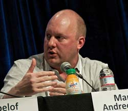

Марк Андреессен (Marc Andreessen).
Чем же знаменит он? Этот человек был соавтором первого веб-браузера, получившего широкое распространение — «Mosaic», а также организатором компании «Netscape Communications».
Несмотря на то, что «Mosaic» не был первым графическим веб-браузером, он стал первым браузером, на который обратили серьезное внимание. Он также был первым браузером, который отображал изображения внутри текста.
После создания «Mosaic», Андреессен стал сооснователем компании «Netscape Communications». Флагманский продукт компании — браузер «Netscape Navigator» оказал огромное влияние на развитие всемирной сети, позволяя донести ее преимущества до простых пользователей. В 1998 году «Netscape» раскрыла исходный код «Netscape Communicator’а» под открытой лицензией. Этот проект, известный под названием «Mozilla», стал основанием для развития программы, известной нам под названием «Firefox».